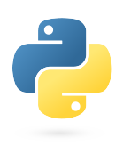

* Linguagens de Desenvolvimento e Programação FullStack *
- W3Schools
- Front-End
- Back-End
> Alura
>
- Python .ORG
- Wikipédia
>
- Python .ORG
- Wikipédia
* Front-End: Linguagens usadas para desenvolvimento e programação com exclusividade em utilização da interface do usuário "client-side".
* Back-End: Linguagens usadas para programação com exclusividade em promover a captura e análise de dados do "server-side" para o "client-side".
* Fullstack: É o conjunto das linguagens "front-end" e "back-end".
**  &
&  **
**
* Sintaxe Fundamental
* Semântica Estrutural
**  **
**
* Sintaxe Fundamental
* Semântica Estrutural
**  **
**
* Sintaxe Fundamental das Versões
* Semântica Estrutural das Versões
**  **
* Sintaxe Fundamental
* Semântica Estrutural
* Bibliografias
* Linguagens de Desenvolvimento e Programação Cognitiva *
*  &
& 
* Sintaxe Fundamental e Diferenças
* Bibliografias